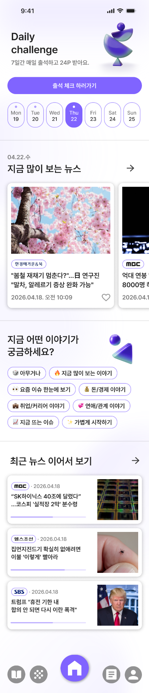
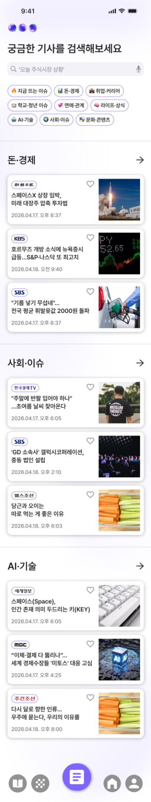
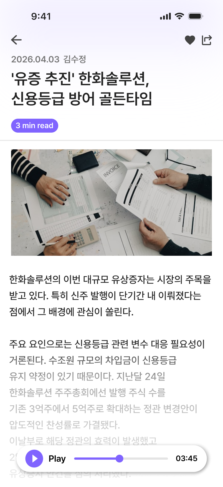
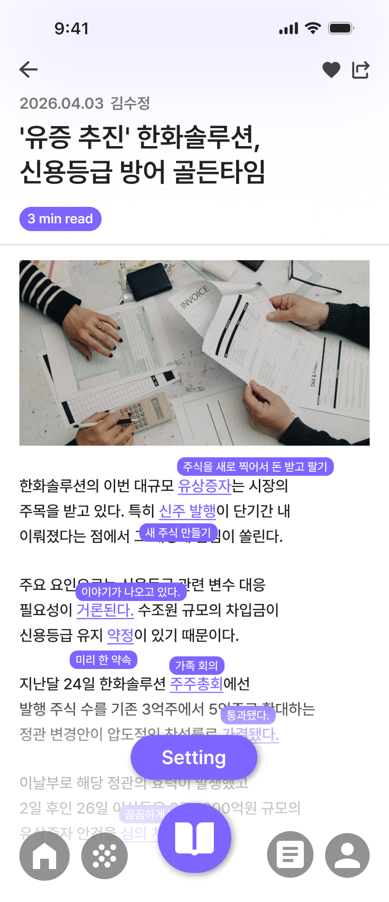
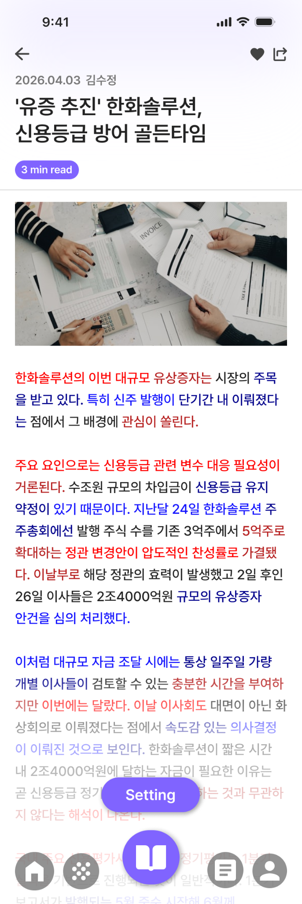
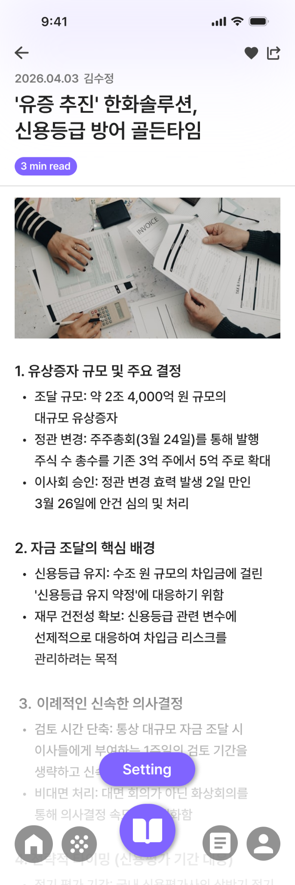
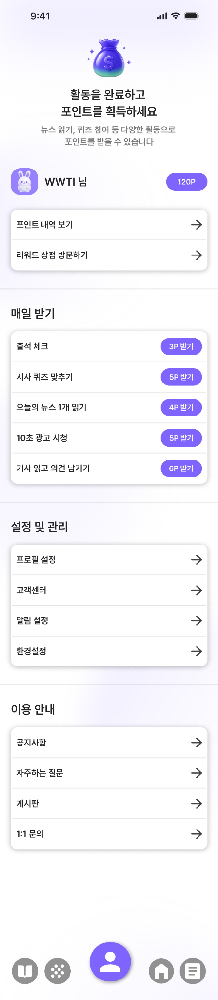

Z세대를 위한 뉴스 읽기 서비스
뉴스 원문 읽기를 어려워하는 Z세대를 위해, 기사 진입의 부담을 낮추고 원문 읽기의 지속성을 높이는 뉴스 읽기 서비스를 제안했습니다.
왜 사용자는 뉴스에 관심이 있어도 원문 읽기로 이어지지 못할까?
뉴스 서비스 사례 조사, 사용자 인터뷰, Think Aloud, 키워드 클러스터링
주요 장벽은 문해력 부족이 아니라 긴 문장, 낯선 용어, 맥락 파악의 어려움, 높은 정보 밀도에서 오는 읽기 부담이었습니다.
관심 기반 탐색, 주요 맥락 요약, 쉬운 설명, 용어 풀이, 단계형 본문, 오디오, 참여형 리워드
원문으로 들어가기 전, 맥락부터 가볍게 파악하는 진입 구조
홈과 검색 화면은 기사 자체보다 먼저 주제와 주요 맥락을 가볍게 파악하게 해, 원문으로 들어가기 전 느끼는 심리적 부담을 낮추도록 구성했습니다.


원문 읽기를 끝까지 이어가게 하는 읽기 보조 구조
기사 화면은 3줄 요약, 쉬운 설명, 용어 풀이, 문단 구조 조정, 오디오 등 다양한 읽기 보조 방식을 실험해, 사용자가 자신의 읽기 수준과 상황에 맞게 진입할 수 있도록 설계했습니다.






읽기 이후의 참여를 다음 행동으로 연결하는 지속 구조
대화형 퀴즈와 포인트 리워드를 연결해 읽은 내용을 가볍게 확인하고, 다음 읽기 행동으로 다시 돌아오게 하는 반복 구조를 만들었습니다.


Abstract
본 프로젝트는 뉴스 원문 읽기에 부담을 느끼는 Z세대 사용자를 위한 UI/UX 리서치 및 서비스 디자인 작업입니다. 기존 뉴스 서비스는 속보성과 탐색성에는 강하지만, 사용자가 원문을 읽고 이해하는 과정에서 겪는 부담을 충분히 완화하지 못했습니다.
따라서 이 프로젝트는 뉴스를 더 짧게 소비하게 만드는 방향이 아니라, 원문으로 들어가기 위한 심리적 장벽을 낮추고 읽기를 지속할 수 있게 돕는 방향에 초점을 두었습니다. 사용자가 기사에 진입하기 전 맥락을 파악하고, 읽는 중에는 필요한 설명을 받으며, 읽은 후에는 이해를 확인하고 다음 읽기로 이어질 수 있는 구조를 제안했습니다.
Problem
많은 뉴스 서비스는 기사 탐색과 빠른 업데이트에 최적화되어 있지만, 실제 원문 읽기 경험은 별도로 설계되어 있지 않습니다. 긴 문장과 촘촘한 문단, 낯선 전문용어, 배경지식 부족이 겹치면서 사용자는 기사 본문을 열기 전부터 부담을 느낍니다.
흥미로운 제목과 썸네일로 기사를 클릭하더라도, 본문에서 맥락을 빠르게 잡기 어렵고 읽는 중 막히는 지점이 반복되면 사용자는 결국 요약 콘텐츠나 짧은 클립에 머무르게 됩니다. 문제의 중요한 점은 읽기 의지의 부족이 아니라, 원문 읽기를 지속하기 어렵게 만드는 구조적 부담에 있었습니다.
Research Journey
리서치는 문제 정의, 사례 조사, 사용자 인터뷰, Think Aloud, 키워드 클러스터링 순으로 진행했습니다. 사례 조사에서는 주요 뉴스 서비스와 읽기 보조 기능을 비교하며 카드형 진입, 요약, 용어 풀이, 오디오, 집중 모드가 어떤 방식으로 읽기 부담을 완화하는지 검토했습니다.
사용자 인터뷰와 Think Aloud에서는 기사를 선택하는 기준, 읽기 전 기대, 읽기 중 중단 지점, 원문에 대한 정서적 거리감을 중심으로 관찰했습니다. 이후 반복적으로 언급된 표현을 묶어 ‘진입 부담’, ‘맥락 부족’, ‘용어 장벽’, ‘지속성 부족’의 네 가지 주요 문제로 정리했습니다.
Insight
리서치 결과, 사용자는 뉴스를 싫어한다기보다 원문을 읽기 시작하기 전에 이미 피로를 예상하고 있었습니다. 특히 “이 기사를 끝까지 이해할 수 있을까”라는 불안이 진입 장벽으로 작동했고, 읽는 중에는 모르는 용어나 끊기지 않는 문단 때문에 이탈이 발생했습니다.
따라서 해법은 콘텐츠를 단순히 축약하는 것이 아니라, 원문 읽기를 지원하는 층위별 보조 구조를 만드는 것이었습니다. 읽기 전에는 맥락을 예고하고, 읽는 중에는 이해를 돕고, 읽은 후에는 참여와 보상을 통해 다음 읽기를 이어주는 흐름이 필요했습니다.
Design Application
디자인은 ‘탐색–이해–지속’의 세 단계로 구성했습니다. 탐색 단계에서는 관심 기반 카테고리와 카드형 진입 방식을 통해 부담 없는 기사 발견 경험을 만들고, 기사 상세에 들어가기 전 3줄 요약으로 주요 맥락을 먼저 파악할 수 있게 했습니다.
이해 단계에서는 쉬운 설명, 용어 풀이, 문단 구조 조정, 오디오, 레벨형 읽기 보조를 배치했습니다. 이 기능들은 원문을 대체하기 위한 요약이 아니라, 원문으로 더 깊게 들어가기 위한 발판으로 설계했습니다. 이후 대화형 퀴즈와 포인트 리워드를 연결해 읽은 내용을 가볍게 확인하고 다음 읽기로 이어지도록 했습니다.
Outcome
최종 결과물은 뉴스 원문 읽기의 진입 장벽을 낮추고, 읽는 과정에서 필요한 이해 보조를 제공하며, 읽기 이후의 참여까지 연결하는 뉴스 읽기 서비스입니다. “쉽게 소비되는 뉴스”가 아니라 “끝까지 읽히는 뉴스 경험”을 목표로 구조를 설계했다는 점이 중요합니다.
이 프로젝트는 정보 구조와 인지적 부담, 읽기 지속성의 관계를 인터페이스 차원에서 다룬 작업입니다. 사용자가 왜 원문 읽기를 멈추는지 관찰하고, 그 지점을 서비스 흐름과 읽기 보조 기능으로 해결하려 했다는 점에서 의미가 있습니다.